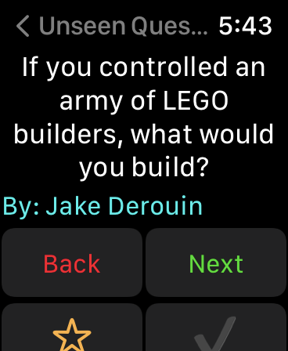
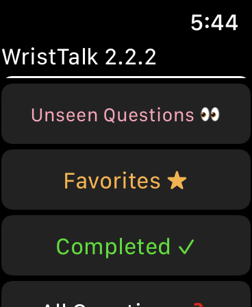

WristTalk: The Apple Watch app that helps you get the girl.*
By Jake Derouin
Awkward Silence: A Nightmare.
Dates can be stressful. Not only do you have to make sure you are looking your nicest, but you have to figure out so many things. Where you are going? What are you wearing? What time you are going. Should you hold her hand? Would she find that poop joke funny? Now let’s say you figured all of that out. You are on a date having fancy dinner at Chuck E. Cheeses and everything is going great. Suddenly, out of nowhere you find yourself out of conversation. You begin to stress, looking around the room for something to force your creative juices to make some good conversation. You glance over at her, she begins to laugh uncomfortably as you turn bright red. But luckily for you, you have the perfect remedy up your sleeve (literally, unless you are wearing short sleeves).
Introducing WristTalk. The app that removes the “silence” from awkward silence.
WristTalk to the rescue! WristTalk is a 100% free Apple Watch app for anyone who is desperate enough to search for an app to help them on dates (including me). Packed with over 100 different conversation starters available right on your wrist. Simply open the app on your watch and ask a question and boom, you will be chatting up a storm. With questions ranging from casual topics such as “Would you be a professional bank robber if you could never get caught?” to questions that can hint at something larger such as “Where was your first kiss?” There are conversation starters for every stage of a relationship whether you are stuck in the friend zone or going for your two week anniversary. Before you know it she will be bragging to her friends with how good of a conversation maker you are.
Features to prepare for your next date
In addition to combating awkward silence, WristTalk has features to help you be ready for peak conversational performance on your upcoming date. With the favorite feature, you can hand pick questions prior to your date that you know she would love. Additionally, with the completed feature, you can prevent yourself from going into grandparent mode and accidently repeating a conversation starter. Best of all, after loading WristTalk once, all of the questions are automatically downloaded and will work online and offline, so even if you are having a romantic moment at the mile high club, you can be sure that you will always have great conversation.
*This statement has not been approved by the FDA, NSA, CIA, NCAA or any other person other than myself. Use at your own risk. Removes silence but not awkwardness.
Download WristTalk today for free on the App Store:
App Store (Only for Apple Watch)